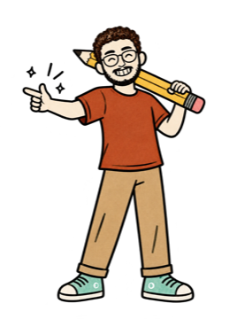
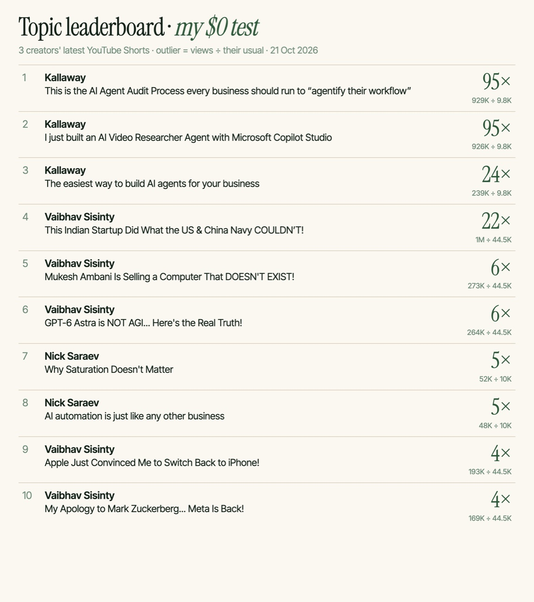
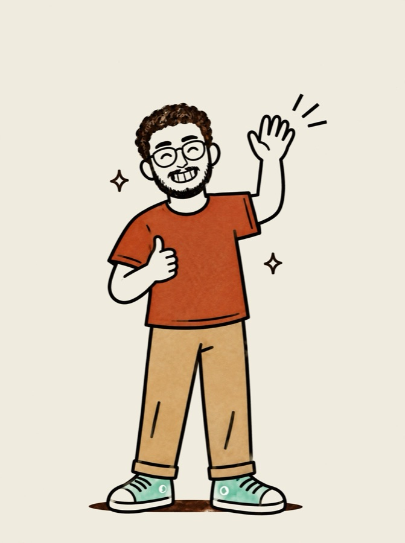

@theabhaychopra
@theabhaychopraWhat a topic leaderboard is
Your competitors' videos, ranked by how far each one beat that creator's usual views. When a video does 10× the usual, the topic did the work — so you make your own take on it.
@kallawaymarketing's Topic Leaderboard carousel (5 Oct 2026). Kallaway built Sandcastles. Everything here is my own version — my prompts, my test. It is not his skill file.
$0, or Sandcastles
Same leaderboard. The free way takes screenshots; the paid way watches for you.
Run the $0 way for two weeks. If you open it every week, the paid one saves you the screenshots. If you don't, you just saved $49.
Pick 10 creators
Your watchlist decides what the board can find. Keep it in your niche and your language.
Who to pick
- 5 big names in your niche — they show which topics are hot.
- 5 creators your size — a 10× hit there is a topic you can win, not just a famous face.
- Same audience as yours: same niche, same language, same country if you can.
- Mix platforms if you like — Reels, Shorts and TikTok all show views.
- Swap out anyone off-topic every week or two.
"Don't overlook smaller creators: Smaller, niche creators often give more targeted and actionable ideas than large channels." — Sandcastles' watchlist guide. They suggest starting with 5–10 channels for a niche and growing to 30–40.
Screenshots + Claude

Screenshot each creator's video tab
Open their profile → Reels (or Shorts, or TikTok's videos). Every tile shows its views. Skip the pinned ones at the top — they're old hits. Take 2–3 screenshots each, about 30 videos.
Paste this into Claude with the screenshots
You are my content researcher. I'm attaching screenshots of the Reels / Shorts / TikTok tab of a few creators in my niche. Each tile shows a view count. 1. For each creator, read every tile's views and its cover text. Write "?" if a number is unreadable. Never guess. 2. Each creator's usual views = the median of their videos in my screenshots. 3. Outlier score = a video's views ÷ that creator's usual views. 4. Make a leaderboard of the top 10 by outlier score: rank, creator, what the video is about, views, their usual, outlier score (one decimal). 5. Group the top 10 into topics. A topic is PROVEN if it hits 3× or more for 2+ different creators, MAYBE LUCK if only one. 6. For each PROVEN topic: one line on why it worked (hook, format, timing), then 3 angles I could make for my audience: [who you make videos for]. My own take, never their script. Show the leaderboard as a table, then the topics. Keep it short.
Before you trust the board, ask Claude to list the views it read, and fix any it misread. On my test it read 10 of 10 right.
What my $0 board found
3 creators' latest public YouTube Shorts: Kallaway (30), Vaibhav Sisinty (30) and Nick Saraev (19, all he has listed).

AI agents and automation for business: Kallaway's top 3 (up to 95×) and Nick Saraev's #2 (4.8×). Two creators, so it's Proven. Vaibhav Sisinty's 22× "Indian startup beat the navies" Short is one creator, one spike — I'd watch for a second before filming it.
Connect it to Claude
Claude can't open Instagram by itself. The Sandcastles connector is the bridge: it reads Reels, TikToks and Shorts for Claude.
Get Sandcastles Pro
The connector needs Pro, Visionary or Titan — Starter ($5) doesn't include it. Pro is $49/mo, or $39/mo billed yearly.
Connect it
Pick the one that matches where you use Claude (Sandcastles' setup guide).
https://mcp.sandcastles.ai/ → Add → Connect/plugin marketplace add sandcastles-ai/plugins, then /plugin install sandcastles@sandcastlesAdd your 10 creators
In Sandcastles → Channels, or just ask Claude: "Add these channels to my Sandcastles watchlist: …". Adding from chat doesn't use credits.
Each morning, ask this
Paste this into Claude
Use Sandcastles. Build my topic leaderboard for the last 7 days. 1. Search my watchlist's videos from the last 7 days and rank them by outlier score. Top 10: rank, creator, what it's about, views, outlier score, Sandcastles link. 2. Group them into topics. A topic is PROVEN if it beats its creator's usual by 3× or more for 2+ creators, MAYBE LUCK if only one. 3. For each PROVEN topic: the hook and format that carried it. Use what Sandcastles has already analysed; don't analyse new videos unless I say so (each one costs a credit). 4. Then 3 angles for my audience: [who you make videos for]. My own take, never their script. Show the leaderboard as a table, then the topics.
/videos-watchlist, /topics and /video-suggest — handy, but they don't do the 2-creator check.Fixes for the usual problems
/mcp).Take the proven topic, find your own example, and say it the way only you would. That's the whole point: data picks the topic, you make the video.

Copy the topic, not the video
Prices and plans checked on Sandcastles' and Claude's own pages on 21 Oct 2026.